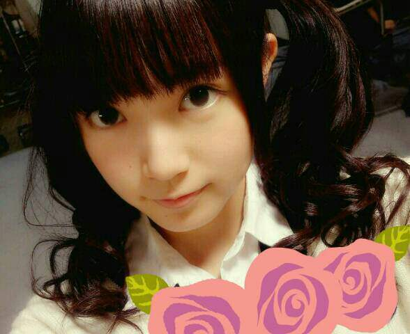
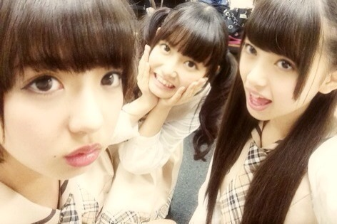
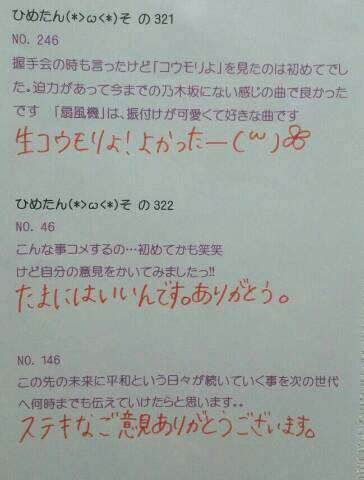

| 2013/11 05 Tue | ひめたん(*>ω<*)そ の364 |
バラ園からこんにちは。こんばんはかな？

更新あいだが空いちゃってごめんなさい
お待たせしました！
いくちゃんの漢字が間違ってました
いくちゃん、いくちゃんファンのみなさん
本当にごめんなさい。
いくちゃんにはお菓子を持って行って
涙を流しながら土下座して謝罪
するくらいの気持ちで
メールしておきました(´・ω・｀)
いくちゃんファンのみなさんにも今
画面を通して全力で頭を下げています
伝わると......いいな。
そんな いくちゃん (生田絵梨花ちゃん)とは
この前お泊りしたんだよ＼(^O^)／
明日はせっかくのオフだから
お布団敷いてまったりお話して
朝目が覚めた瞬間から一緒で
しかもそのまま遊びに行けたらステキだよねって♪
ほんとにステキないちにちでした！
るんるん (斎藤ちはるちゃん)もだけど
中３組はお仕事がない日も学校があるから
なかなかプライベートで集まれなくて。
るんるんは次の日に予定が入ってたから
この前は残念だったけど
今度は３人でお泊りしようねっ☆
今ごろ修学旅行かーたのそうだなー( ω )
＼う／＼い／＼あ／

みーんな中学３年生

 ぺろ
ぺろ
まあやのりっぷはせくしーですね
あすかりんもせくしー
ひめたんも......
日曜日はロックの学園に
出演させていただきました☆
私たちが先生だなんて
はあああうっ(・O・ノ)ノ
乃木坂ちゃんのロック魂は伝わったでしょうか。
結構ボリューミーなセットリストでした！
13日の金曜日はなんと10人バージョン。寂しい。
遠征チームさんもお疲れさまでした。
最後は みおちゃん (堀未央奈ちゃん)も一緒に
バレッタ初披露させていただきましたー
生で見れた方はラッキー(´ω`)
これから番組とかライブとかで
たくさん歌いたいなー♪
前回の乃木どこみてくださったかなー？
楽屋での生態調査なんて
ちょっとどきどきしちゃうよね(〃ω〃)
あの収録のあとから
みおちゃんが
一緒にお手洗い行ってくれるんだよー♪
あーでも、常に水分取るとか
そんなことしないでね←
開運と日経エンタテインメント！も
チェックしてくださった方ありがとーうっ
開運は告知が遅れてしまってごめんなさーい！
ひめたんは みさみさ (衛藤美彩ちゃん)のコメントに
改めてウルウルしそうになりました(´;ω;｀)
東北楽天ゴールデンイーグルスさん
おめでとうございます！日本一！
今年もプロ野球で
日本中がアツくなりましたねー
やーステキだなーかっこいーなー
ひめたんも野球やってみたい！

 今月だけで50時間以上残業して
今月だけで50時間以上残業して
疲れがあまり取れないので、ひめたん励まして！！
わー大変だ( ；∀；)お疲れ様です
そうだなーひめたんの感覚だと
オフが少なければ少ないほど幸せって思っちゃう。
ただ体力的にはキツいですよねー
毎日しっかりお風呂浸かってねー
好きな子にかわいいと言われるんですが
僕は男です、どうすればいいかなー？
褒めてるからいいんじゃないー？
だめかしら(´ω`)
ひめたんは
男の1人称は俺派ですか？僕派ですか？
どっちでもってゆっちゃアレだけど
そんなこだわりはないかなー
私、拙者、某......
どれもステキですよ。それがし！
足の裏くすぐられたりするの大丈夫？
多分だめかなー
基本的にこしょこしょは弱いです
だからやっちゃだめだよ( ^ω^ )
ひめたんが妹だったらどんな特典がある？
もれなくひめたんが甘えてくれ......
うん？それだけじゃ足りない？
そうだなーじゃあ
一緒にバケツプリン作ろーりぼん買い行こー♪
ひめたさんは眠気を覚ましたい時
どうしますか？
オススメのアイテムあったら教えてください
眠くなったら
本能に逆らわず素直に寝ちゃうんだよねー
あっブラックコーヒーとかどうかしら？
でも飲んでも眠い時は眠いです。しゃーない。
ひめたんはポケモンとかするの？？
やったことないなー
まっちゅん(松村沙友理ちゃん)が
すんごいやってるよねー(^O^)
テスト終わったぁぁ♪
でね！国語が96点でクラス一位だった！
誉めてーww
お疲れさまーおめでとー！
クラストップなんてやばいねーやりおるね／(^^)＼
最近、ひめきゅんを通り越して
ひめきゅきゅんきゅんになちゃってきてるけど、
ひめたんなんかした？笑笑
それはやばいです末期です。
えーひめたん？
原因ひめたんなの？あれーなんでかなー♪
ひめたんが乃木坂にいて
一番やりがいを感じる瞬間は？
どのお仕事もやりがいを感じるけど
やっぱりひめたんはライブが好きなので
ライブのあととかかな。
全国ツアーや代々木を経て
ライブの取り組み方とかも成長できた気がします！
ひめたんはおでんの具は何が一番好き？
白滝さーん(*^O^*)
いつもコメントありがとーう

みんなひめたんお人形さん
くださーいって言ってくれて照れたよー///
でもねーいっこしかないんだー(・∀・)

(＊´・ω・＊)
コメント(341)
2013/11/05 23:42